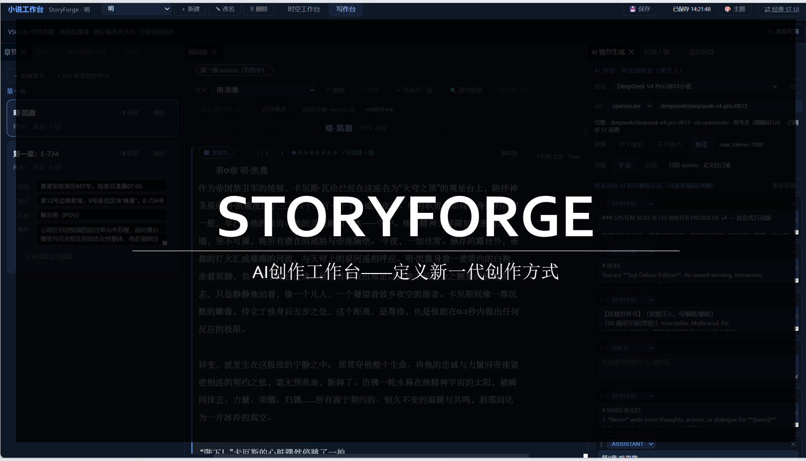
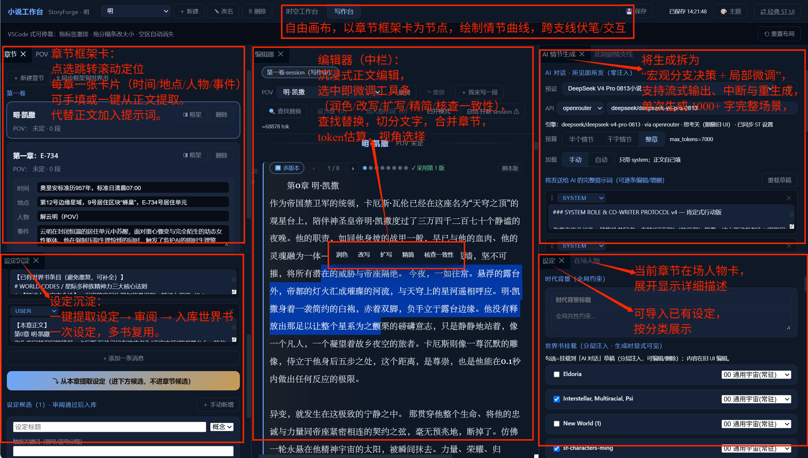
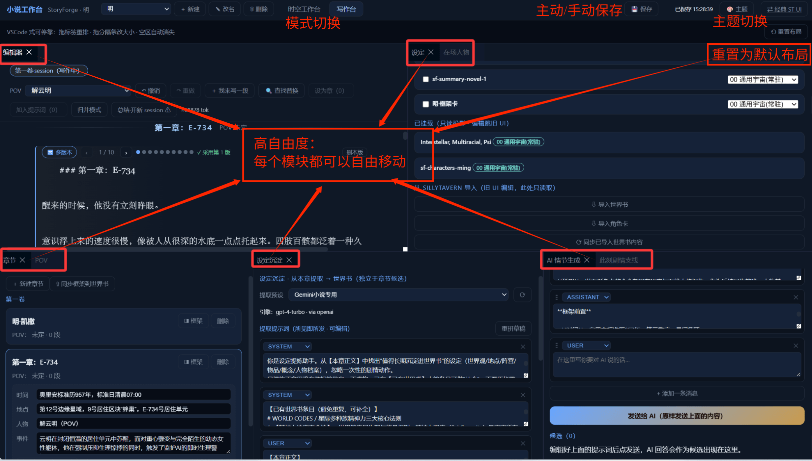

AI 创作工作台 —— 定义新一代创作方式

StoryForge 是基于 SillyTavern 构建的
AI 长篇多 POV 小说创作 IDE。
它不是又一个聊天界面 —— 而是为"花园派"（discovery writing，马丁式探索写作）量身打造的导演式创作工具。
设定好世界与人物，让角色顺性格自由生长。
AI 码字 ~80%，作者是导演 —— 只在宏观分支节点决策 + 局部微调。
记住大方向与目的地，防烂尾，拥抱涌现。
核心模型：POV 探照灯 · 时空河流 —— 故事时空是一条奔流的河，所有支线在同一时间轴并进； 作者把 POV（视点人物）探照灯打在最具冲击力的角落。一章 = 一个 POV，马丁式多 POV 轮流叙事。
从宏观支线规划到微观场景打磨，一站式创作体验。

▲ 功能全景：写作台各模块标注
泳道时间轴 + 节点星图，多支线并进可视化。每章一张框架卡（时间/地点/人物/事件），可手填或一键从正文提取。AI 推荐最佳 POV 视点。
基于 dockview 的 9 面板可停靠 IDE 布局。章节、设定、人物、心法、AI 生成、设定沉淀……所有面板可自由拖拽排列。
渐进式建议：先给 1 个 → 换一个 / 多个 / 反馈重写。一次生成 500~3000 字完整场景。候选自动快照模型、采样参数，横向对比优化提示词。
时代背景（全局）+ 在场人物 + 创作心法 + 支线大方向 → 自动拼装为结构化 prompt。全部肯定式诱导，禁止否定式约束。
承 SillyTavern 语义：常驻条目恒注入，关键词条目仅在上下文命中时注入。分层挂载（通用宇宙 / 当前副本 / 主角团），多书复用。
章末一键 AI 提取设定 → 人工审阅 → 入库世界书。独立出口不污染写作候选流。可编辑提取提示词，选目标世界书，一次设定多书复用。
同一处正文的多个写法，swipe 左右切换，可归并相邻段落为一个多版本节点。落稿只取采用版本，其余保留备选。
Session = 连续对话流（跨章）；写到上下文上限 → AI 总结 → 开新 session。摘要写入世界书条目，长篇一致性不丢失。
每本小说 = 独立 ST 载体卡，旧 UI 选卡即见全部 session。Session 文件为权威正文，每次保存自动备份，误操作可恢复。
每个模块都可以自由拖拽、停靠、调整大小，按你的创作习惯定制工作区。一键重置回默认布局。

▲ 所有面板可自由拖拽排列，空停靠区自动消失
~4000 行 TypeScript/React 代码 · 37 个 TDD 验证脚本 · 不改 SillyTavern 后端，纯前端扩展
从需求调研到功能落地，7 个 Step 迭代。